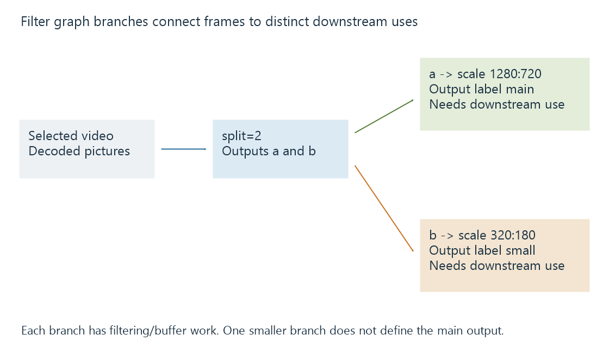
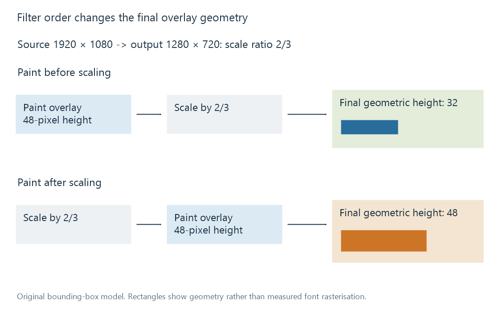

Media filter graphs
A media filter graph connects decoded-frame transformations through defined input/output relationships whose order, format and branching affect the result.
A filter graph connects media transformations. Its edges carry pictures or samples in compatible representations; its nodes perform operations such as scaling, mixing or rendering.
Order and connectivity are part of the meaning. A collection of enabled options does not, by itself, describe how their outputs reach the next stage.
A source can feed two branches
This original FFmpeg-style graph expression splits one decoded video input and scales the branches to two sizes:
[0:v:0]split=2[a][b];[a]scale=1280:720[main];[b]scale=320:180[small]
The labels connect outputs to later inputs. In this example:
| Label | Relationship |
|---|---|
| 0:v:0 | The selected video input context |
| a and b | Outputs of the split |
| main | The 1280 × 720 branch output |
| small | The 320 × 180 branch output |

The expression is not an executed conversion. Downstream encoders, output mappings and resource packaging are another part of the job.
One branch producing preview-sized pictures does not make the main programme 320 × 180. The connections determine which result reaches which output. A graph output also needs to be consumed by the intended path rather than merely declared.
Operation order can change the result
Suppose the source picture is 1920 × 1080 and the destination is 1280 × 720. The size ratio is 2/3.
If a 48-pixel-high text overlay is painted before scaling, its geometric height scales to 32 pixels. If the picture is scaled first and a 48-pixel overlay is painted afterward, the output overlay remains 48 pixels high.

Those are different presentations even though both graphs contain the same broad operations. The calculation is a geometry model; actual font rasterization and filter behavior can introduce additional detail.
Colour processing has a similar ordering issue. An overlay must have an appropriate signal interpretation at the point where it joins the pictures. A graph cannot assume every input already uses the same range, transfer function or pixel format.
Filters require usable representations
A scaling filter operates on picture data, not on opaque copied video packets. That is why a stream-copy path cannot also perform ordinary picture scaling.
Connected filters can impose requirements on dimensions, sample format, colour or memory domain. The graph implementation may need an explicit or negotiated format conversion between them.
A mismatch can cause initialisation failure even when every named filter exists individually. The failure concerns the connection between representations, not merely a missing codec.
Branching changes workload
Splitting a decoded frame can avoid decoding the same source twice in a suitable graph. It does not make every downstream operation free: each branch can still need filtering, buffers and encoding.
A preview branch and a full-resolution branch have different amounts of picture data. They can also compete for shared processing or transfer resources.
Likewise, a hardware encoder after the graph does not establish how the graph's filters ran. Software filters, accelerator filters and surface transfers remain distinct work. The complete pipeline supplies that context.
See Also
- Decoding media streams
- Encoding a new media representation
- How a transcoding pipeline works
- How Video Scaling Works
- Subtitle burn-in
- How HDR-to-SDR Tone Mapping Works